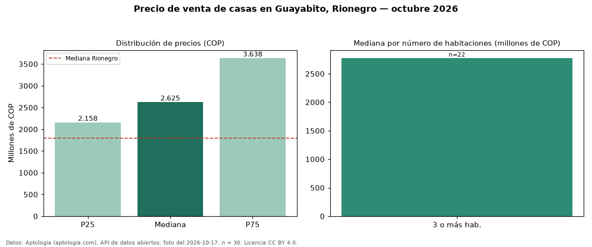

Precio de venta de casas en Guayabito, Rionegro — octubre 2026
En Guayabito, Rionegro, la mediana de precio de venta de casas es COP 2,62 mil millones, según 30 avisos vigentes. Eso la ubica 46 % por encima de la mediana de Rionegro para casas (COP 1,80 mil millones). El segmento con más oferta es el de 3 o más habitaciones (22 avisos, mediana COP 2,77 mil millones). Por mediana, es el puesto 6 de 13 barrios de Rionegro con al menos 30 avisos de casas en venta: en la franja media. 70 % de los avisos incluye parqueadero, y su mediana (COP 2,60 mil millones) es prácticamente igual a la general. La mitad central de los avisos va de COP 2,16 mil millones a COP 3,64 mil millones (razón 1,7), una dispersión moderada. El aviso más barato pide COP 630 millones y el más caro COP 4,95 mil millones. Datos: Aptología (aptologia.com), API de datos abiertos, licencia CC BY 4.0 — https://www.aptologia.com/casas-en-venta/rionegro/guayabito. Archivos: PDF de 2 páginas, CSV con las cifras y gráfica PNG.

| Avisos únicos | 30 |
|---|---|
| Percentil 25 | COP 2.158.250.000 |
| Mediana | COP 2.625.000.000 |
| Percentil 75 | COP 3.637.500.000 |
Fuente: avisos vigentes de portales inmobiliarios recopilados por Aptología, deduplicados (mínimo 30 avisos únicos por celda). Precios pedidos, no cerrados. Fecha: 2026-10-18.